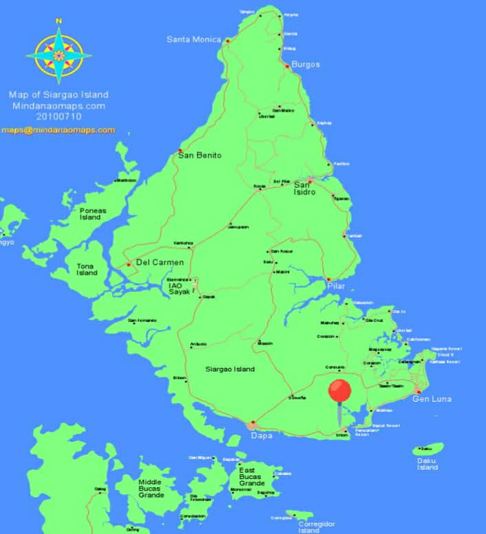
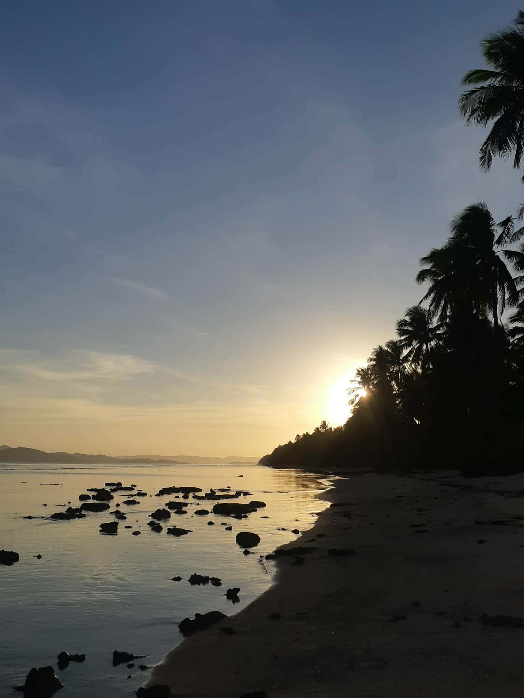
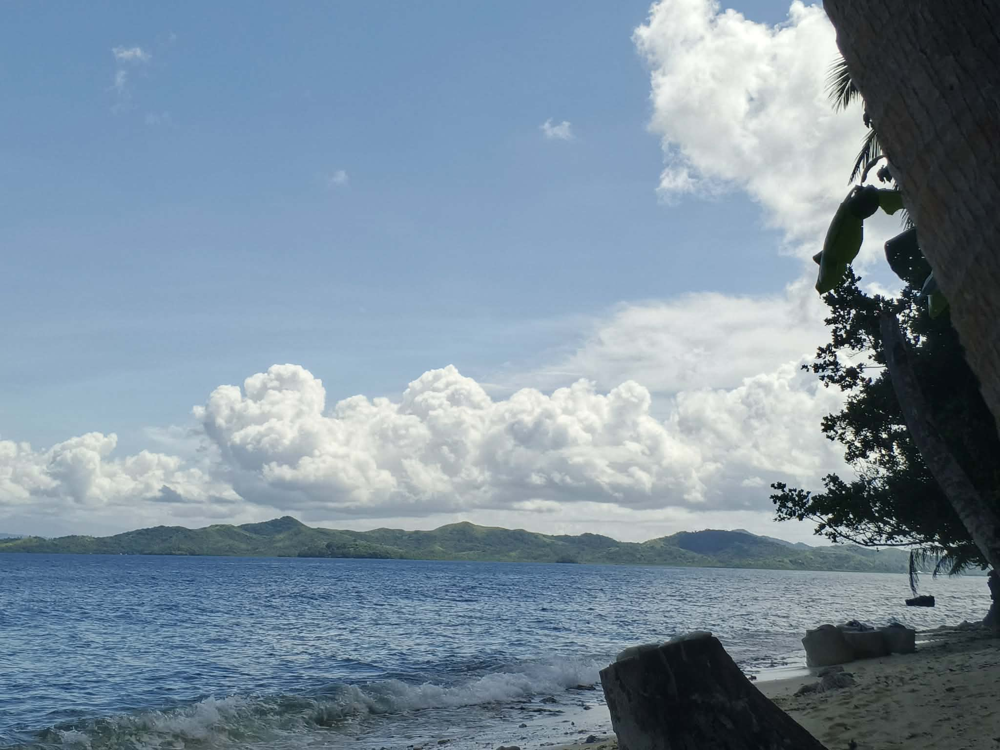
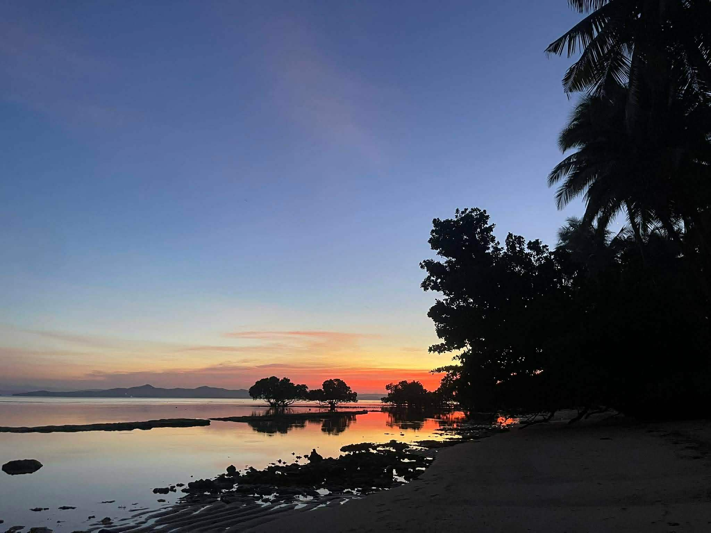
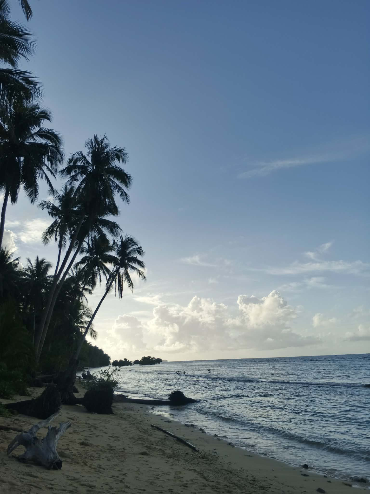

Barangay Union is located in the Municipality of Dapa, on Siargao Island, in the province of Surigao del Norte, Philippines. It is part of the Caraga Region in northeastern Mindanao. The barangay is situated in the western part of Siargao, within the main municipality of Dapa, which serves as the island's commercial and transportation center.
Barangay Union is a community surrounded by the natural beauty of the island, with nearby coastal areas, greenery, and a peaceful rural atmosphere. Its location provides residents with access to the municipality's essential services, schools, markets, and transportation facilities
It is a wonderful place with beautiful scenery and welcoming communities.




Barangay Union, Dapa, Siargao is home to two beautiful beaches, Talisay Beach and Paradise Beach, each offering a peaceful escape surrounded by nature. Both beaches are also known as surfing spots, attracting tourist who enjoy the waves and the beauty of the ocean. Talisay Beach is a lovely place to enjoy the calm beauty of the sea, especially during the morning, when the sky brightens, the fresh sea breeze fills the air, and the sunlight reflects across the water. Meanwhile, Paradise Beach is a wonderful place to witness the beauty of the sunset, as the sky turns into a breathtaking blend of warm colors, creating a peaceful and relaxing atmosphere. Whether for surfing, enjoying the sunrise, or watching the sunset, these two beaches highlight the natural charm of Barangay Union and make it a place worth visiting and remembering.